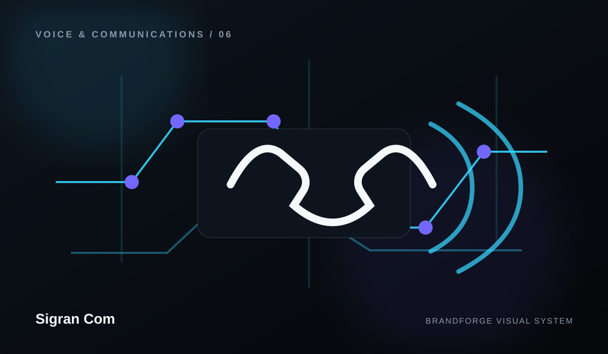
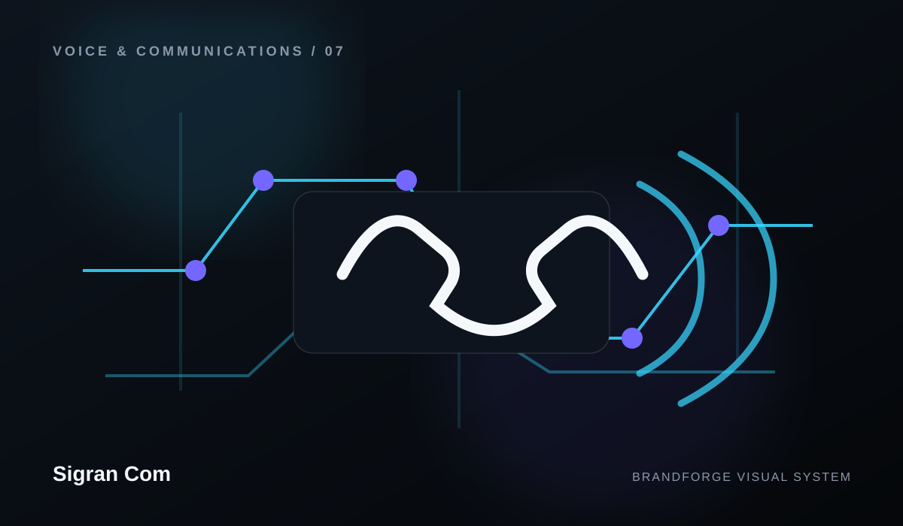

connectivity
Make the experience understandable before making it impressive.
Sigran Com
Programmable voice, SIP connectivity, business calling, phone numbers, messaging, call routing, automation, and communications infrastructure. The website presents that direction through a complete system of content, visuals, interaction patterns, and supporting pages.


DIRECTION
Programmable voice, SIP connectivity, business calling, phone numbers, messaging, call routing, automation, and communications infrastructure.
The identity is designed to feel coherent whether someone enters through the homepage, a capability page, an article, a resource, or a policy page.
PRINCIPLES
Make the experience understandable before making it impressive.
Treat every public detail as part of the brand experience.
Build components and content that can keep working as the business grows.
Use design and technology to create meaningful forward movement.
PUBLIC INFORMATION
BrandForge builds the structure without inventing clients, testimonials, awards, certifications, locations, social profiles, product inventory, prices, service guarantees, or business metrics. Those belong on the site only when the company can verify them.